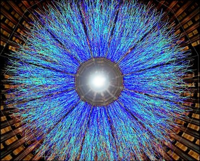

量子力学・場の理論
目次
-
経路積分の方法
経路積分が単に多数の確率変数に支配される統計の処理テクニックに過ぎないということを示す．
-
摂動計算の方法
経路積分から出発し，相互作用を持つ場の理論の相関関数を正規分布の下での期待値として計算する方法を示す．
-
格子上の場の理論
正方格子上に場の理論を定義する方法を示す．特にゲージ場をいかにして定義するかが非自明である．
-
低エネルギー有効理論
くりこみ理論の考え方から出発し，QED₄ や QCD₄ といった低エネルギー有効理論をいかにして得るかを示す．
